Imagem: Repos Production (kit de imprensa)Draft de cartas · Construção de civilização
Como jogar 7 Wonders
Para quem nunca jogou3 a 7 jogadores30 min10+2ª edição (Repos Production; no Brasil, Galápagos)
· Redação Elite Boardgamers
Resumo em 1 minuto
Em três Eras, você escolhe uma carta por turno ao mesmo tempo que todos, constrói Estruturas e a sua Maravilha, e vence quem somar mais pontos de vitória depois da Era III.
Todos jogam ao mesmo tempo: cada um escolhe 1 carta da mão, faz uma ação com ela (construir a Estrutura, construir um estágio da Maravilha ou vender por 3 Moedas) e passa o resto ao vizinho.
Recursos não se gastam; o que faltar se compra só dos vizinhos, a 2 Moedas por recurso, e só de cartas Marrons, Cinzas e do recurso inicial do tabuleiro.
No fim de cada Era, a força militar é comparada com a de cada vizinho; depois da Era III, somam-se Maravilha, Tesouro, conflitos e as cartas Azuis, Amarelas, Verdes e Roxas.
Como você aprende: 3 etapas, da mesa montada à contagem de pontosLeitura do essencial: cerca de 10 min
À vista, só o essencial para jogar. O que abre com + é explicação, exemplo, exercício ou regra de caso especial: abra quando precisar.
Montar a mesa passo a passo
A montagem segue a página de preparação do manual p. 3, na mesma ordem. O jogo é para 3 a 7 jogadores; o número de jogadores muda os passos 2 e 3.
O que vem na caixap. 1:
Componente
Quantidade
Tabuleiros de Maravilha (lado do Dia e lado da Noite)
7
Cartas de Era: Era I / Era II / Era III
49 / 49 / 50, 148 no total
Moedas: valor 1 / valor 3
54 / 24, 78 no total
Fichas de Conflito Militar: Derrota / Vitória
24 / 24 (8 de Vitória por Era)
Caderneta de pontuação
1
Cartilhas de Descrição de Efeitos
3
Lista de cartas e encadeamentos (folha de referência com todas as cartas e os encadeamentos)
1
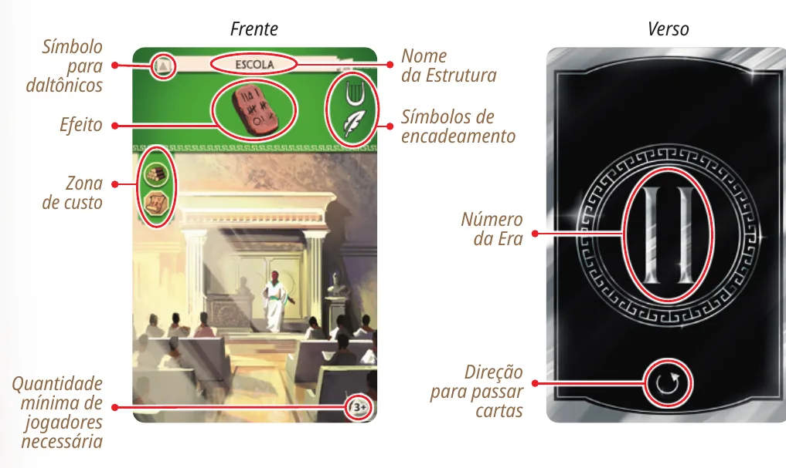
Uma carta de Era, frente e verso. Na frente: o nome (Escola), o efeito (aqui, um símbolo de ciência), a zona de custo à esquerda, os símbolos de encadeamento à direita, o símbolo para daltônicos no alto e, no rodapé, o número mínimo de jogadores (3+). No verso: a Era (II) e a direção para passar as cartas. Ilustração: manual Repos Production p. 2
Separe as cartas de Era em três baralhos: Era I, Era II e Era III. O verso de cada carta mostra a Era em algarismo romano p. 2 e 3.
Em cada baralho, fique só com as cartas do seu número de jogadores. No rodapé da frente, cada carta mostra o número mínimo de jogadores: 3+, 4+, até 7+. Fique com as cartas cujo número é menor ou igual ao de jogadores na mesa e devolva as outras à caixa. Com 5 jogadores, por exemplo, ficam as de 3+, 4+ e 5+ p. 3.
No baralho da Era III, separe todas as cartas Roxas, as Guildas. São 10, todas marcadas 3+, por isso nenhuma sai no passo 2 (Lista de cartas e encadeamentos, versão oficial em inglês). Sorteie, sem olhar, o número de jogadores mais 2 e junte essas cartas, viradas para baixo, ao resto da Era III. As outras Roxas voltam à caixa. Com 5 jogadores, são 7 Roxas p. 3.
Embaralhe cada um dos três baralhos e ponha-os virados para baixo no centro da mesap. 3. Deixe ao lado um espaço para a pilha de descarte, que começa vazia (figura da p. 3).
Cada jogador pega um tabuleiro de Maravilha ao acaso, põe à sua frente e escolhe o lado: Dia ou Noitep. 3. Nas primeiras partidas, o manual recomenda o lado do Dia para todos. O manual não diz como sortear, só que o tabuleiro é aleatório; se o grupo preferir, cada um escolhe o seu p. 3. No canto de cima, o tabuleiro mostra o recurso inicial: um recurso que a sua cidade produz desde o começo p. 2.
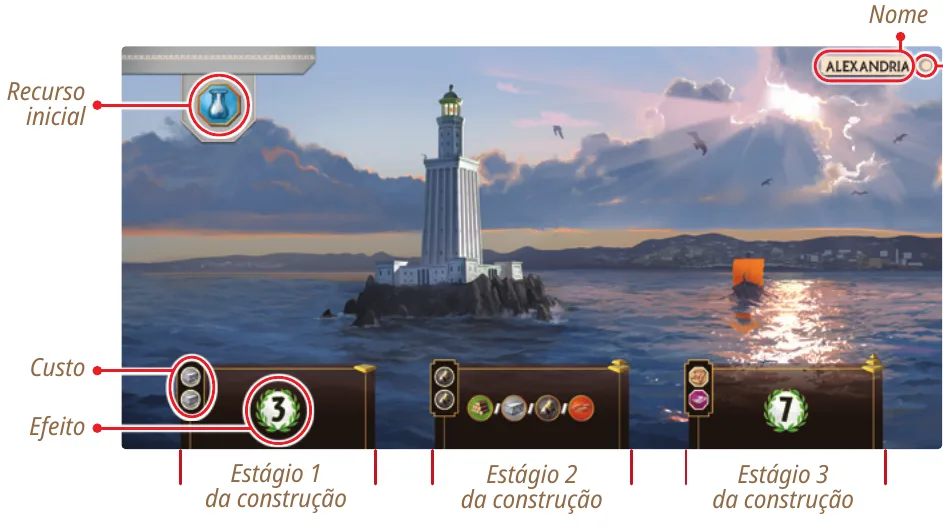
O tabuleiro de Alexandria, lado do Dia. No canto de cima, o recurso inicial; no alto à direita, o nome e o sinal de lado; embaixo, os três estágios da construção, cada um com o custo à esquerda e o efeito à direita. Ilustração: manual Repos Production p. 2
Cada jogador pega 3 Moedas de valor 1 e as põe no próprio tabuleiro. É o Tesouro inicial. As Moedas que sobram formam a reserva de Moedas, no centro da mesa p. 3.
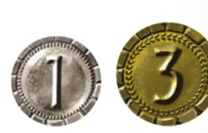
As duas Moedas: valor 1 (prata) e valor 3 (ouro). Ilustração: manual Repos Production p. 2
As Moedas contam pelo valor: quando o manual diz "x Moedas", é o valor total, em Moedas de 1 ou de 3 p. 2.
Ponha todas as fichas de Conflito Militar no centro da mesa, formando a reserva de fichas p. 3.
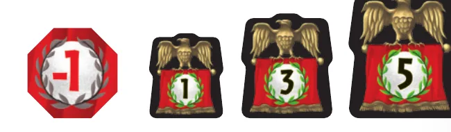
As fichas de Conflito Militar: Derrota (-1) e as Vitórias da Era I (+1), da Era II (+3) e da Era III (+5). Ilustração: manual Repos Production p. 2
Devolva à caixa os tabuleiros que sobraram e o resto do material que não entrou na mesa p. 3. Deixe à mão a caderneta de pontuação e as cartilhas de Descrição de Efeitos: o manual as usa na contagem final p. 8.
Ninguém começa. Em 7 Wonders todos jogam ao mesmo tempo, então não há primeiro jogador nem ordem de turno p. 4. Na primeira partida, o manual recomenda que os jogadores revelem e joguem um após o outro, para se familiarizar com o jogo p. 4. Seus vizinhos são o jogador logo à sua esquerda e o logo à sua direita; com 3 jogadores, são os outros dois p. 4.
Para começar a Era I, distribua 7 cartas da Era I para cada jogador, viradas para baixo. É a mão inicial p. 4.
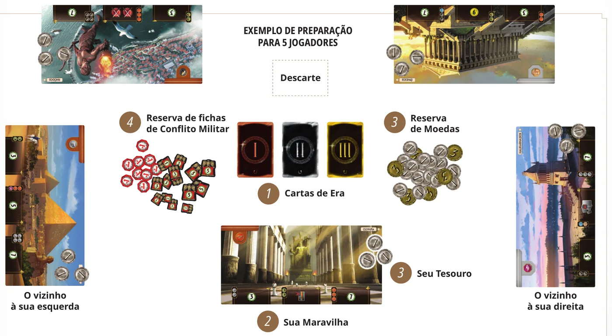
A mesa montada para 5 jogadores: no centro, os três baralhos de Era (1), a reserva de fichas de Conflito Militar (4), a reserva de Moedas (3) e o lugar do descarte; à sua frente, a sua Maravilha (2) com o seu Tesouro de 3 Moedas (3); dos lados, os vizinhos da esquerda e da direita. Ilustração: manual Repos Production p. 3
O que muda com o número de jogadoresp. 3 e 4:
Jogadores
Cartas de Era que ficam (em cada baralho)
Roxas sorteadas para a Era III
3
3+
5
4
3+ e 4+
6
5
3+ a 5+
7
6
3+ a 6+
8
7
todas (3+ a 7+)
9
Voltam para a caixa: as cartas de Era acima do número de jogadores, as Roxas não sorteadas e os tabuleiros sem dono. Não mudam: as 7 cartas na mão, as 3 Moedas iniciais e as fichas.
Antes de começar, confira: três baralhos, só com as cartas do seu número de jogadores, cada um com 7 cartas por jogador (21 com 3 jogadores, 49 com 7); Roxas sorteadas (jogadores mais 2) dentro da Era III; um tabuleiro e 3 Moedas na frente de cada um; reservas de Moedas e de fichas no centro; espaço para o descarte; 7 cartas da Era I na mão de cada um.
Partida de 4 jogadores. Quantas cartas Roxas entram no baralho da Era III?
O número de jogadores mais 2: 4 + 2 = 6. As outras voltam para a caixa p. 3.
Comece a jogar em 4 minutos
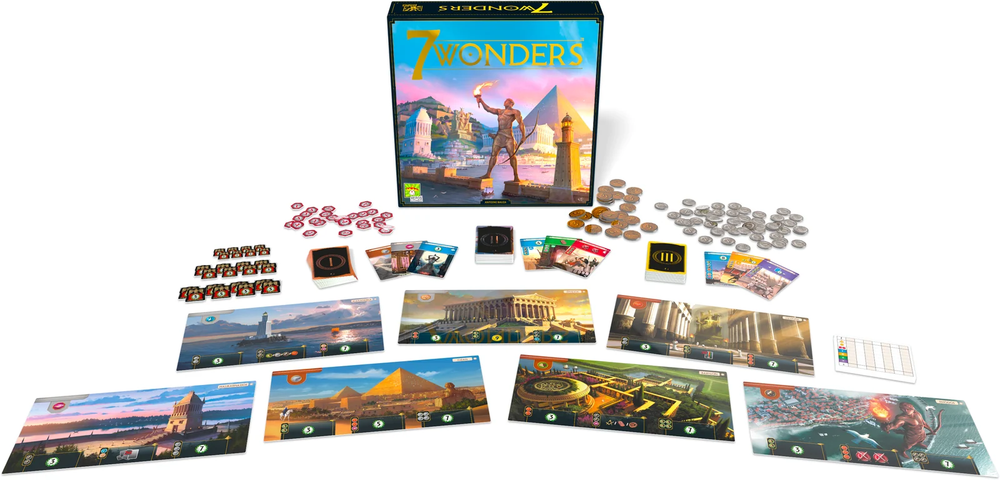
Imagem: Repos Production (kit de imprensa)
Meta: em 4 minutos de leitura, entender a partida e jogar o seu primeiro turno sem abrir o manual.
A ideia do jogo
Cada jogador governa uma cidade da Antiguidade, representada por um tabuleiro de Maravilha. A partida tem três rodadas, as Eras. Em cada Era, todos recebem uma mão de cartas, escolhem uma ao mesmo tempo, usam essa carta e passam o resto da mão para o vizinho. As cartas viram Estruturas na sua cidade: produzem recursos, dão pontos, Moedas, força militar ou ciência. No fim de cada Era, você compara a força militar com a dos dois vizinhos. Depois da Era III, vence quem somar mais pontos de vitória p. 1 e 4.
Monte a mesa
A montagem completa, com figuras, está na seção "Montar a mesa passo a passo", logo acima. O essencial p. 3 e 4:
Três baralhos de Era, só com as cartas do seu número de jogadores; na Era III, entram as Roxas sorteadas (jogadores mais 2).
Um tabuleiro de Maravilha para cada um (lado do Dia nas primeiras partidas) e 3 Moedas sobre ele.
Moedas e fichas de Conflito Militar no centro.
7 cartas da Era I para cada jogador. Todos jogam ao mesmo tempo: não há primeiro jogador.
Seu primeiro turno
Um turno tem três momentos, e todos fazem cada um ao mesmo tempo p. 4 e 5:
Escolha uma carta da mão e ponha-a virada para baixo à sua frente. Guarde as outras, também viradas para baixo.
Jogue: todos revelam a carta escolhida juntos, e cada um faz uma única ação com ela:
Ação
O que você faz
Construir a Estrutura
Paga o custo da carta e a põe virada para cima acima do seu tabuleiro
Construir um estágio da Maravilha
Paga o custo do próximo estágio do seu tabuleiro e põe a carta virada para baixo embaixo dele
Vender a carta
Descarta a carta virada para baixo e pega 3 Moedas da reserva
Passe as cartas que sobraram na mão para o vizinho da esquerda (Eras I e III) ou da direita (Era II). Você recebe a mão do outro vizinho e começa o turno seguinte.
Algumas cartas são grátis: a zona de custo, no canto esquerdo, vem vazia. E o seu tabuleiro já produz um recurso desde o começo, o recurso inicialp. 2 e 6. A etapa 2 explica como pagar o resto.
Ainda não precisa saber
Como pagar com recursos, como comprar recursos dos vizinhos e o encadeamento: etapa 2. O último turno da Era, o conflito militar e a contagem de pontos: etapa 3. Abra a etapa quando chegar a hora.
Como a partida acaba
Cada Era tem 6 turnos; no sexto, você recebe 2 cartas, joga uma e descarta a outra. Então cada um compara a força militar com os dois vizinhos e ganha fichas de Vitória ou de Derrota. Depois do conflito da Era III, cada um soma os pontos de vitória na caderneta. Vence quem tiver mais; no empate, quem tiver mais Moedas no Tesouro p. 5 e 8.
Prefere ver? Um vídeo de regras em português. Ele é de 2016 e mostra a primeira edição, com outra arte e alguns detalhes diferentes. Ele complementa este guia; em caso de diferença, vale o manual.
7 Wonders - Como Jogar, canal Romir Play House · abrir no YouTube
0Antes de tudo: o que é este jogoOpcional
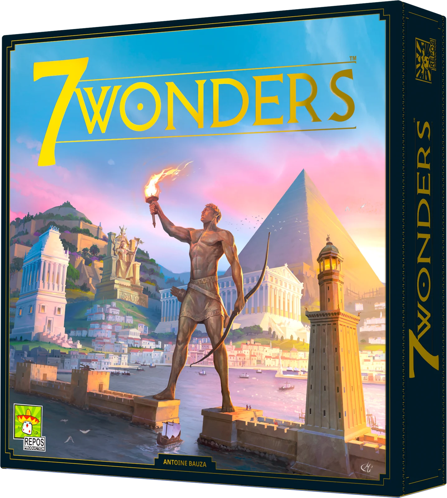
Imagem: Repos Production (kit de imprensa)Abrir esta seção
Você é o líder de uma das sete grandes cidades da Antiguidade, cada uma com a sua Maravilha. Em três Eras, constrói Estruturas que produzem recursos, fazem comércio, armam o exército, avançam a ciência e rendem prestígio. Vence quem tiver a cidade com mais pontos de vitória depois da Era III p. 1.
O que dá o ritmo ao jogo é a mão que circula. Ninguém compra cartas de um baralho no seu turno: você recebe uma mão, fica com uma carta e entrega o resto. A carta que você deixa passar vai parar na mão do vizinho, e a que ele deixou passar chega na sua. Com isso, todos jogam ao mesmo tempo p. 4 e 5; o jogo é para 3 a 7 pessoas (página do jogo na Repos).
Duas ideias sustentam o resto:
Só os vizinhos contam diretamente. Você compra recursos só dos jogadores à sua esquerda e à sua direita, e a guerra é só contra eles p. 5 e 7.
Tudo vira ponto no fim. Não há placar durante a partida: os pontos de sete fontes são contados depois da Era III p. 8.
1Como este guia ensinaOpcional
Imagem: Repos Production (kit de imprensa)Abrir esta seção
Três etapas, cada uma uma parte real da partida: jogar um turno, pagar o que se constrói, fechar a Era e contar os pontos. Cada etapa traz Para entender (o porquê), Passo a passo (a regra exata), casos especiais a um toque e tarefas com ajuda que diminui: exemplo resolvido, complete e sua vez, além de um treino rápido onde a conta costuma sair errada. Toque numa opção para ver a resposta e a explicação. No fim, uma avaliação diz o que reler, e uma folha de consulta vai para a mesa.
2Etapa 1: um turno de 7 Wonders
Por que funciona assimRegra adicional: Ordem dos estágiosRegra adicional: Maravilha incompleta
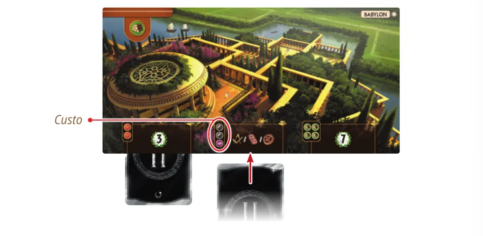
Construir um estágio: a carta, virada para baixo, entra sob o tabuleiro, metade coberta pelo segundo estágio, depois que o jogador pagou o custo marcado ali. A carta do primeiro estágio já está embaixo do estágio 1. Ilustração: manual Repos Production p. 4Ver um exemplo resolvidoPratique esta etapa: exercícios com respostas
3Etapa 2: pagar o custo
Por que funciona assim
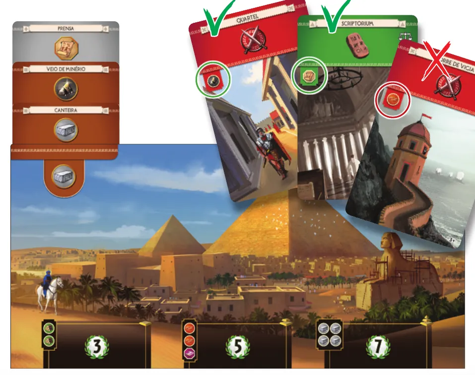
O exemplo da p. 6: a cidade produz 2 Pedras (uma da Canteira e outra do recurso inicial do tabuleiro), 1 Minério e 1 Papiro. Ela pode construir o Quartel, que pede 1 Minério, ou o Scriptorium, que pede 1 Papiro; não pode construir a Torre de Vigia, que pede Argila. Ilustração: manual Repos Production p. 6Regra adicional: Estrutura nova do vizinhoRegra adicional: Carta de escolhaRegra adicional: Ninguém bloqueiaRegra adicional: Comércio mais barato
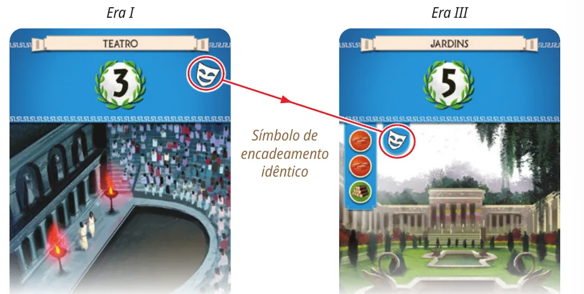
O encadeamento do manual: o Teatro, da Era I, tem um símbolo no canto superior direito; os Jardins, da Era III, mostram o mesmo símbolo ao lado do custo. Quem construiu o Teatro constrói os Jardins de graça. Ilustração: manual Repos Production p. 7Ver um exemplo resolvidoPratique esta etapa: exercícios com respostas
4Etapa 3: fim da Era e pontuação
Por que funciona assim
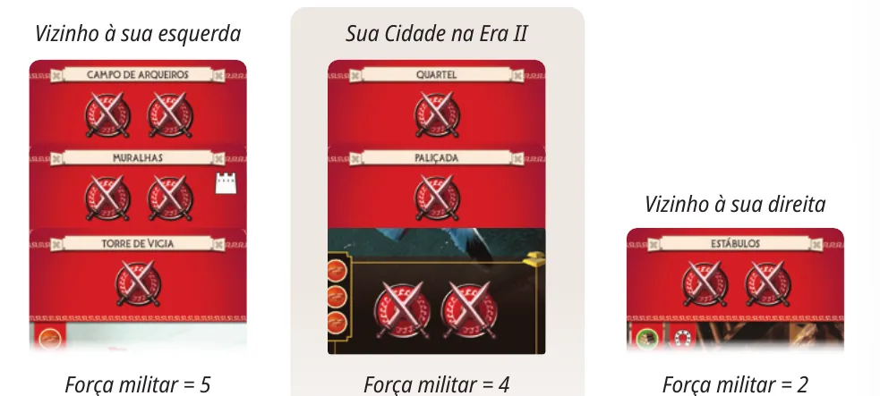
O exemplo do manual, fim da Era II: o vizinho da esquerda tem força 5 (Campo de Arqueiros, Muralhas e Torre de Vigia); a sua cidade, 4 (Quartel, Paliçada e um estágio da Maravilha com dois símbolos); o vizinho da direita, 2 (Estábulos). Você perde para a esquerda e vence a direita. Ilustração: manual Repos Production p. 5Ver um exemplo resolvido
Símbolos iguais
1
2
3
4
5
6
Pontos de vitória
1
4
9
16
25
36
Sobre a ediçãoRegra adicional: Pontos das Amarelas e das RoxasRegra adicional: Efeitos de estágio
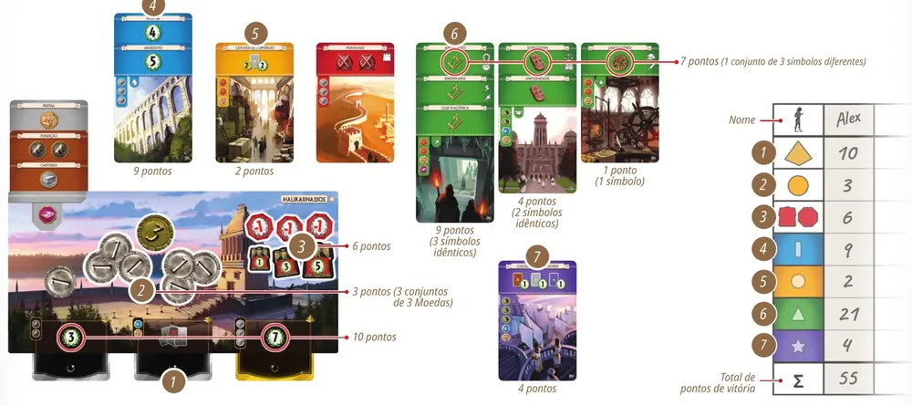
A pontuação de Alex no manual: Maravilha 10, Tesouro 3 (3 conjuntos de 3 Moedas), Conflitos 6, Azuis 9, Amarelas 2, Verdes 21 e Roxas 4, total 55. Nas Verdes, 3 símbolos iguais dão 9, 2 iguais dão 4, 1 dá 1 e um trio de diferentes dá 7. Ilustração: manual Repos Production p. 8Ver um exemplo resolvidoPratique esta etapa: exercícios com respostas
5Situações especiaisOpcional
Imagem: Repos Production (kit de imprensa)Abrir esta seçãoDicaSobre a ediçãoSobre a edição
6Avaliação finalOpcional
Imagem: Repos Production (kit de imprensa)Abrir esta seção
Responda sem consultar. Cada resposta diz o que reler.
1. Partida de 3 jogadores. Que cartas ficam no baralho de cada Era?
Fica a carta cujo número mínimo é menor ou igual ao de jogadores, e as Roxas são jogadores mais 2 p. 3. Releia "Montar a mesa passo a passo".
2. Você vendeu uma carta no quarto turno. Quantas Moedas ganha?
Vender dá 3 Moedas da reserva. Só a carta descartada no sexto turno não dá nada p. 4 e 5. Releia a etapa 1.
3. Você já tem uma carta chamada Quartel e recebe outro Quartel. O que pode fazer com ele?
Duas Estruturas com o mesmo nome nunca; os outros dois usos continuam valendo p. 4. Releia a etapa 1.
4. O vizinho da direita produz Vidro numa carta Cinza e Tecido num estágio da Maravilha. O que você pode comprar dele?
Compra-se o recurso inicial e os das cartas Marrons e Cinzas; recurso de estágio de Maravilha, não p. 7. Releia a etapa 2.
5. Fim da Era I: sua força é 2; a da esquerda, 3; a da direita, 0. Que fichas você pega?
Cada vizinho é comparado em separado, e a Vitória vale conforme a Era p. 5. Releia a etapa 3.
6. Você tem 3 símbolos de ciência A e 3 B, nenhum C. Quantos pontos?
9 + 9 = 18; sem C, não há trio p. 8. Releia a etapa 3.
7Para consultar durante a partida
Imagem: Repos Production (kit de imprensa)
Preparação: cartas de Era só com o número mínimo menor ou igual ao de jogadores; Roxas na Era III: jogadores mais 2. Um tabuleiro (lado do Dia nas primeiras partidas) e 3 Moedas para cada um. Moedas e fichas no centro. 7 cartas da Era para cada um. Todos jogam ao mesmo tempo.
Turno (6 por Era): escolher 1 carta, revelar todos juntos, fazer uma ação, passar o resto: esquerda nas Eras I e III, direita na Era II.
Ações:
Construir a Estrutura: pagar o custo; nunca duas com o mesmo nome.
Construir um estágio: pagar o custo do tabuleiro; carta virada para baixo sob o estágio; da esquerda para a direita; opcional.
Vender: carta no descarte, 3 Moedas.
Sexto turno: 2 cartas; joga 1, descarta a outra sem Moedas.
Custos: vazio, grátis; 1 Moeda, à reserva; recursos, da sua cidade (cada símbolo uma vez por turno, nunca se gasta) ou comprados; encadeamento (Eras II e III), grátis.
Comprar do vizinho: só da esquerda e da direita; recurso inicial, Marrons e Cinzas; 2 Moedas ao dono (1 com efeito de comércio); cada símbolo uma vez por turno; só com Moedas que você já tinha; nada de Estrutura construída no mesmo turno.
Fim da Era: força militar contra cada vizinho; igual, nada; menor, -1; maior, +1 (Era I), +3 (Era II), +5 (Era III).
Pontos: Maravilha; Tesouro (1 por 3 Moedas); Conflitos; Azuis; Amarelas; Verdes (iguais: 1, 4, 9, 16, 25, 36; mais 7 por trio diferente); Roxas. Empate: maior Tesouro; persistindo, vitória dividida.
Biblioteca de Downloads da Asmodee Brasil: o item "7WO201 - 7 Wonders 2ªed" aparece na busca, mas o arquivo não estava disponível em 05/11/2026.
Asmodee Brasil. 7 Wonders (primeira edição, livro de regras de 2014), na mesma biblioteca: não usado, por ser de outra edição.
O FAQ oficial citado na cartilha (www.7wonders.net/faq) não abriu em 05/11/2026. Não foi encontrada errata.
Regras conferidas no livro de regras em português do Brasil da segunda edição de 7 Wonders, publicado pela Repos Production, a editora do jogo, no site oficial (arquivo de 2021, 8 páginas), e comparadas com a versão em inglês de 2023. No Brasil, a caixa é da Galápagos; o arquivo dela não estava disponível na biblioteca da Asmodee Brasil, e um ou outro nome no folheto impresso pode ser diferente. Este guia não vale para a primeira edição nem para 7 Wonders Duel.